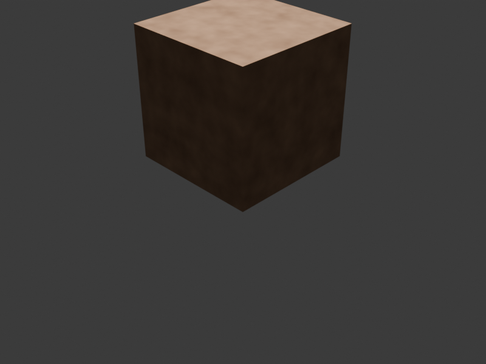

🎨 Blender AI 材質示範
📋 示範說明
這是使用
Blender 4.2.3 LTS
+
Dream Textures
插件創建的 AI 材質示範。
展示了程序化木紋材質的生成效果，這是 AI 材質生成的基礎技術。

渲染引擎
Cycles (GPU)
硬體
RTX 4090
解析度
800 × 600
渲染時間
1.16 秒
🎯 材質特色
頂面
：淺米色調，磨砂質感
側面
：深棕色，皮革/木材質感
紋理
：程序化噪點紋理
光影
：三點式照明 + 環境遮蔽
🚀 完整安裝清單
✅ Blender 4.2.3 LTS
✅ Dream Textures AI 插件
✅ PyTorch 2.10.0 + CUDA
✅ RTX 4090 GPU 支援
✅ 完整的 AI 依賴庫